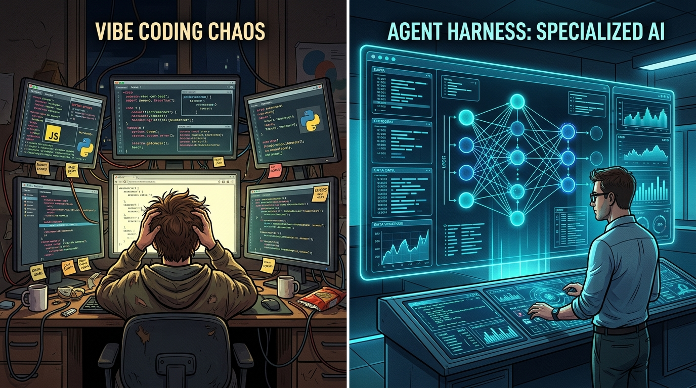
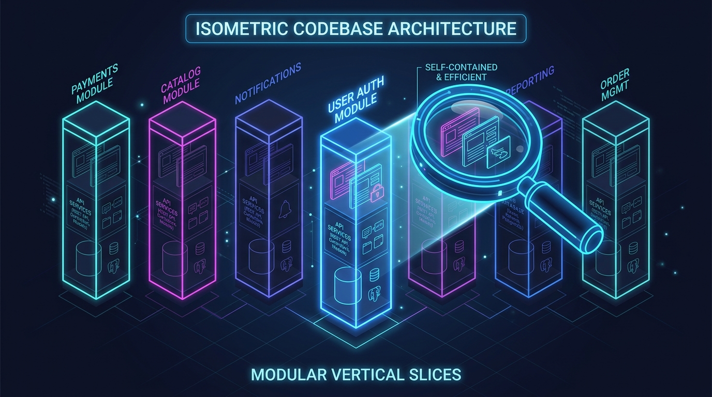

Agentic
Engineering
Architecting the Future of Software Development
The software engineering landscape is undergoing a fundamental shift from "vibe coding"—the practice of prompting without a deep understanding of the underlying system—to "agentic engineering." This transition is characterized by the use of specialized agent harnesses, custom developer workflows, and codebase architectures optimized specifically for AI consumption.
Leading engineering teams, such as Stripe, are already merging over 1,300 pull requests weekly with zero human-written code by leveraging "outloop" agentic systems. To achieve this level of scale, organizations must move beyond off-the-shelf chat interfaces and invest in custom agentic layers.

Vibe Coding vs. Agentic Engineering
The distinction between basic AI-assisted coding and true agentic engineering is defined by the level of control and system knowledge.
- Vibe Coding: Not knowing what will happen in the system and not looking; the lowest-hanging fruit of AI coding.
- Agentic Engineering: Knowing what will happen in the system so well that constant human supervision is unnecessary.
- Specialization as Advantage: The greatest edge for an engineer is moving away from "out-of-the-box" experiences and toward specialized solutions (custom prompts, custom skills, and specialized agent harnesses).
High-Scale Agentic Infrastructure
Stripe’s "Minions" project demonstrates the potential of fully unattended coding agents operating on a codebase with hundreds of millions of lines of code.
The "Outloop" Strategy
Stripe distinguishes between Inloop (human babysitting an agent in real-time) and Outloop (parallelization of tasks where the human only plans and reviews). By moving agents out of the loop into dedicated sandboxes, a single engineer can manage multiple agents solving problems in parallel.
| Component | Description |
|---|---|
| Warm Devbox Pool | Isolated AWS EC2 instances that mirror human developer environments. Pre-warmed to boot in 10 seconds. |
| Agent Harness | A custom fork of the "Goose" coding agent, optimized for Stripe’s specific LLM infrastructure. |
| Blueprint Engine | A system that interleaves agentic loops with deterministic code (e.g., linters, tests). |
| Tool Shed | A centralized internal MCP (Model Context Protocol) server housing nearly 500 tools. |
| Rules Files | MDC/Markdown files with front-matter that conditionally apply context based on subdirectories. |
To maximize the efficiency of AI coding tools (Claude Code, Cursor, Windsurf, etc.), architectures must prioritize "AI Readability" and context management.
Vertical Slice Architecture
[OPTIMAL FOR AI]
Structure: Everything (API, model, service) is isolated in a single feature directory.
Pros: Allows "one-prompt context priming"; minimizes cross-cutting concerns; highly token-efficient.
Cons: High code duplication; avoids shared "utils" folders to prevent context bloat.
Atomic Composable Architecture
Structure: Atoms → Molecules → Organisms → Membranes.
Pros: Highly reusable and easy to test at the "atom" level.
Cons: The "new feature modification chain problem"—changing an atom requires updating every higher-level composition.
Layered Architecture
Structure: Logic separated by technical layers (API, Models, Services).
Cons: Forces AI tools to search across numerous directories, chewing up tokens.

The "agent harness" is the core product of agentic engineering. It provides deterministic code, token caching, orchestration, and model control.
Three-Tier Agent Architecture
- 1. Orchestrators: High-level thinkers that plan and delegate; they do not perform raw building.
- 2. Team Leads: Managers that coordinate sub-tasks and step in if a worker fails (e.g., if a model returns no response).
- 3. Workers: Hyper-specialized agents (e.g., View Generators, Animation Specialists, Soft Validators) that execute specific tasks within their domain.
Agent Expertise and Mental Models
Effective harnesses allow agents to maintain "Mental Models" or expertise files. These files (e.g., 7K-8K tokens) allow agents to track their own work, ideas, and system patterns across sessions, creating "agents that learn."
Maximizing the ROI of agentic coding requires deep visibility into tool performance and costs.
Claude Trace
A tool that generates local HTML files to inspect Claude Code traffic. It reveals how Claude acts as a "user" to fire off sub-agents and provides full access to hidden system prompts and tool descriptions.
Usage Tracking
Commands like npx cc usage help engineers view ROI as a return on investment rather than a
cost. If an average engineer is 50-70% more productive, the cost of high-tier plans is negligible compared
to the saved engineering hours.
Multi-Modal Tools
Using screenshot MCP servers (like Snaphappy) allows agents to "see" the UI they are building, bridging the gap between terminal-based code and visual results.
Five Bets for 2026
The future of engineering is "agent-first." Success in 2026 requires making specific strategic bets today.
Custom Agents: Moving into the top 1% of engineering by deploying domain-specific agents in production systems to solve "nasty" complexity.
Deprecating Old Skills: Letting go of manual, line-by-line coding to make space for teaching agents. "It's not about what you can do; it's about what you can teach your agents to do."
Limit Breaking Constraints: Blasting through the time-intensive bottlenecks of planning and reviewing by using AI Developer Workflows (ADWs).
Multi-Agent UIs: Moving beyond lazy chat interfaces toward high-information-rate interfaces, including voice and multi-agent visualization.
Compute Maxing: Transitioning to "always-on" 24/7 custom agents. If an agent is not constantly solving problems on your behalf, you are not using enough compute.
"Manage your context, manage your results."
- ZTE (Zero Touch Engineering): The North Star goal of shipping from prompt to production with no human oversight.
- AI Developer Workflow (ADW): A pipeline of agents that combines the "old world" of deterministic engineering with the "new world" of agentic reasoning.
- Specialization is the Edge: Off-the-shelf tools babysit the agent; custom systems allow the agent to operate autonomously.
- The ROI Question: "Your time is your most valuable resource." High-scale agentic engineering is an investment in time recovery.